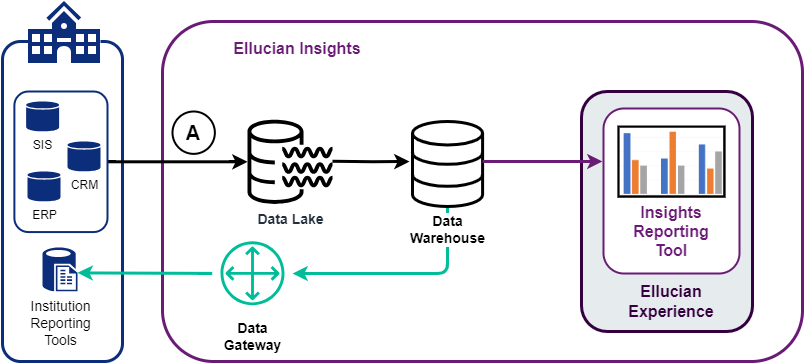

Insights reference materials
Ellucian Insights terminology
Refer to these terms and definitions used in Ellucian Insights documentation.
| Term | Definition |
|---|---|
| action menu | Presents options for drilling through the data. |
| aggregation | The act of summarizing data with a mathematical function, such as averaging the values in a column, or counting the table rows. The resulting number is often called a metric. |
| area chart | A line chart where the space between plotted values and the x-axis is filled in with a solid color. Also known as an area graph. |
| bar chart | A data visualization that uses rectangles or bars along axes that are proportional in size to the values being measured. These bars are scaled to the values associated with discrete, categorical data. Also known as a bar graph or column chart. |
| bin | A single range of continuous values used to group values in a chart. Binning data simplifies data visualizations, so you can get a sense of the data distribution and easily spot outliers. You most often see bins used with histograms. |
| bubble chart | A way to visualize the correlation between three different variables. You can also use color to display an additional dimension. |
| card | A component of a dashboard that displays data or text. Ellucian Insights dashboards are made up of cards, with each card displaying some data (visualized as a table, chart, map, or number) or text (headings, descriptive information, or relevant links). Note: A card in Ellucian Experience is a concise snapshot of information, located on a user's Experience dashboard. See About Ellucian Experience.
|
| CDC | Change Data Capture. The process that identifies and tracks data changes applied to the source using insert, update, or delete manipulations. |
| collection | Folder containing your organization's dashboards and charts. |
| combo chart | A chart that combines bars and lines. |
| cross-filtering | Clicking on a chart or table in a dashboard to filter everything else in the dashboard. |
| dashboard | A set of queries or reports presented in a single page. Note: A dashboard in Ellucian Experience refers to a user's home page that includes aggregated content from multiple systems. See About Ellucian Experience.
|
| data browser | A tool for browsing and building reports from the database schemas and tables available to the Insights reporting tool. The data browser is available only in the Insights reporting tool |
| data catalog | Metadata repository for data structures ingested and available in the Data Lake. |
| Data Gateway | Enables connections from non-Ellucian reporting and analytics tools directly to the Insights Data Warehouse. |
| Data Lake | For Ellucian Insights, the initial staging location in the cloud for your ingested Ellucian data. data. |
| dataset | A collection of tables loaded from the data source into the Ellucian Data Lake. |
| dataset template | A set of tables identified for ingestion for a given application or module. |
| data source | Specifies where data is ingested from. A data source represents the source application and database type (Banner Oracle, etc.). |
| Data Warehouse | For Ellucian Insights, contains operational data structures (ODS) and analytical data structures which you can access through Ellucian Insights or your tool of choice through a database connection (JDBC) through the Data Gateway. |
| DBEU | Database Extension Utility. A tool for applying large scale database changes to Banner. For more information, see the Banner DB Upgrade Guide. |
| DMS | Database Migration Service. An Amazon Web Services (AWS) used by the Ellucian Data Lake scripts to transfer data from a data source to the Ellucian Data Lake scripts. |
| drill through | To explore a data subset, by clicking a linked part of a report. |
| editor | The GUI editor Ellucian Insights for building your reports. See also query builder. |
| filter | A predicate expression that limits the results of a query based on stated criteria. |
| histogram | A chart that displays continuous data using vertical bars that each represent a discrete, equal-sized range. These ranges are called bins. |
| line chart | A type of visualization that connects discrete values connected by lines to show changes and trends. Also known as a line graph. |
| navigation report | In a dashboard with cross-filtering, the navigation report drives the filtering to the other reports. |
| pivot table | A data visualization tool that summarizes rows and columns of a table and lets you rotate (pivot) the columns to view those summaries in multiple ways. The summary rows are usually subtotals or grand totals, though they can also be other metrics like averages. |
| query builder | The graphical interface for writing simple and custom queries. See also editor. |
| report | The result set of a query of your data. |
| restart (data source ingestion) | If you restart a data source from a paused state, Insights reingests all datasets for the specified data source, including datasets that were previously ingested. This also requires you to reload data from the Data Lake to the Data Warehouse. See Pause, resume, or restart a data source for more information. |
| resume (data source) | If you resume a data source from a paused state, Insights continues CDC processing from the point where CDC processing was paused. |
| resume (recurring job schedules) | If a recurring job schedule is paused, the Resume option reactivates the recurring job. The job status changes to ACTIVE and the job resumes its regular schedule, as specified in the Next Run column. See Pause or delete recurring jobs for more information. |
| row chart | A variation on a bar chart, where data is visualized with horizontal bars rather than vertical. |
| supplemental logging | An Oracle feature used to track when data is changed in an Oracle database. Supplemental logging must be turned on to track changes in a data table every time a data row insert, update, or delete occurs within a table. |
| SDE | Supplemental Data Engine. A Banner tool used to add data fields to Banner pages. The SDE stores data not part of the existing Banner data model. |
| visualization | In Ellucian Insights, a graphical presentation of data to identify trends, patterns, and outliers. |
Data lineage in Insights
Report builders and viewers need to know how the data structures and elements available in Insights map to your source system’s data structures and elements. Ellucian provides the Insights Metadata reporting view to identify those associations.
The Insights data catalog is the metadata repository for the data structures and data elements loaded into the Data Warehouse and available for reporting. The Insights Metadata reporting view in the odsmgr schema is your source for the metadata stored in the data catalog.
Use the Insights Metadata reporting view to determine the lineage between your source table or column to the target table or column in the Insights Data Warehouse.
You can use the Insights reporting tool, available with Insights Premium, or any connected reporting tool to view and query the Insights Metadata reporting view.
Example
A member of the Biology department has asked you, a report designer, to build a report that shows the pattern of student withdrawals from the 300-level Biology courses, summarized by term.
You determine that the withdrawal term information is stored in Banner in the SFRWDRL_TERM_CODE column of the SFRWDRL table. However, you are unsure of which reporting view to use within the Insights Data Warehouse.
- Navigate to the
Insights Metadataview of theodsmgrschema. Then use the query builder to filter on Source Column and enter SFRWDRL_TERM_CODE. - Use a SQL query, such as:
SELECT insights_metadata.* FROM insights_metadata WHERE insights_metadata.source_column = 'SFRWDRL_TERM_CODE';
The result identifies that the column in the target (Insights Data Warehouse) is ACADEMIC_PERIOD, found in two objects: ENROLLMENT_WITHDRAWAL and AS_ENROLLMENT_WITHDRAWAL. You can use this information to continue building your report.
Baseline tables ingested to the Data Lake
During the initial ingestion process, Insights ingests a baseline set of schemas and tables from your source system to the Data Lake and later loaded to the Data Warehouse. These schemas and tables contain the most frequently used information for reporting and analytics.
Baseline tables are ingested to the Data Lake at Step A in the following diagram.

- creating a custom dataset to determine if a table has been loaded to the Insights Data Warehouse.
- building or troubleshooting a custom transformation using the Data Connect Integration Designer.
- troubleshooting the absence of data that is expected to be part of the baseline tables.
The attachments on this topic contain the baseline tables list for your source system (Banner, Colleague, Degree Works). To download an attached file, click Attachment  on this topic, select the file, and click Download.
on this topic, select the file, and click Download.
If you want a list of all tables and views in your Insights Data Warehouse (including any custom datasets and tables or views created using custom transformations), refer to How to create a list of all Insights Data Warehouse objects.
How to create a list of all Insights Data Warehouse objects
In addition to the baseline tables, your Data Warehouse may contain additional schemas, tables, and views that are not in the default set of baseline tables. Run the scripts in this topic to get the complete list of tables and views specific to your Data Warehouse.
- custom datasets
- tables and views created from custom transformations using the Data Connect Integration Designer
- non-Ellucian data imported from an external source
For an up-to-date list of all schemas, tables, and views in your Insights Data Warehouse, run the query that applies to your source system. If you have custom datasets from other source schemas, be sure to add those schemas to the query.
Banner and Degree Works:
select table_schema, table_name, table_type
from information_schema.tables
where table_schema in ('general', 'saturn', 'faismgr', 'taismgr', 'fimsmgr', 'payroll', 'posnctl', 'alumni', 'odsmgr', 'odslov', 'odssrc', 'odsstg', 'ia_admin', 'custom_insights', 'dwschema');Colleague:
select * from information_schema.tables
where table_schema in ('dbo', 'custom_insights')Supported expressions
When building your reports, you can use two types of basic expressions: aggregations and functions.
Aggregations
Aggregation expressions take into account all values in a field. You can use them only in the Summarize section of the editor.
| Expression | Description | Syntax | Example |
|---|---|---|---|
| Average | Returns the average of the values in a column. | Average(column) |
Average([Quantity]) returns the mean of the Quantity field. |
| Count | Returns the count of rows in the selected data. | Count() |
Count() If a table or result returns 10 rows, Count returns 10. |
| CountIf | Counts only the rows where the condition is true. | CountIf(condition) |
CountIf([GPA] > 2.0) returns the number of rows where the GPA is greater than 2.0. |
| CumulativeCount | The additive total of rows across a breakout. | CumulativeCount() |
CumulativeCount. |
| CumulativeSum | The rolling sum of a column across a breakout. | CumulativeSum(column) |
CumulativeSum([Subtotal]). |
| Distinct | The number of distinct values in this column. | Distinct(column) |
Distinct([Last Name]) returns the count of unique last names in the column Last Name. Duplicates are not counted. |
| DistinctIf | Returns the count of distinct values in a column where the condition is true. | DistinctIf(column, condition) |
DistinctIf([ID], [Department] = "Computer Science") returns the count of unique IDs where the Department column is “Computer Science.” |
| Max | Returns the largest value found in the column. | Max(column) |
Max([Age]) returns the oldest age found across all values in the Age column. |
| Median | Returns the median value of the specified column. | Median(column) |
Median([Age]) finds the midpoint age where half of the ages are older, and half of the ages are younger. |
| Min | Returns the smallest value found in the column. | Min(column) |
Min([Salary]) finds the lowest salary among all salaries in the Salary column. |
| Percentile | Returns the value of the column at the percentile value. | Percentile(column, percentile-value) |
Percentile([Score], 0.9) returns the value at the 90th percentile for all values in that column. |
| Share | Returns the percent of rows in the data that match the condition. The return value is a decimal. | Share(condition) |
Share([Gender] = "Male") returns the number of rows with the Gender field set to Male, divided by the total number of rows. |
| StandardDeviation | Calculates the standard deviation of the column, which is a measure of the variation in a set of values. Low standard deviation indicates values cluster around the mean, whereas a high standard deviation means the values are spread out over a wide range. | StandardDeviation(column) |
StandardDeviation([Population]) returns the standard deviation for the values in the Population column. |
| Sum | Adds all the values in the column. | Sum(column) |
Sum([Tuition]) adds all the values in the Tuition column. |
| SumIf | Sums the specified column only for rows where the condition is true. | SumIf(column, condition) |
SumIf([Tuition Charges], [Payment Status] = "Unpaid") adds all the tuition amounts with a Payment Status of Unpaid. |
| Variance | Returns the numeric variance for a given column. | Variance(column) |
Variance([Current Age]) returns a measure of the dispersion from the mean current age for all ages in that column. |
Functions
Function expressions apply to each individual value. You can use them to alter or filter the values in a column or to create new, custom columns.
| Expression | Description | Syntax | Example |
|---|---|---|---|
| abs | Returns the absolute (positive) value of the specified column. | abs(column) |
abs([Debt]). If Debt is -100, abs(-100) returns 100. |
| between | Checks the value of a date or number column to see if they are within the specified range. | between(column, start, end) |
between([Created At], "2019-01-01", "2020-12-31") returns rows where Created At date fell within the range of January 1, 2019 and December 31, 2020. |
| case | Tests an expression against a list of cases and returns the corresponding value of the first matching case with an optional default value if nothing else is met. | case(condition, output, …) |
case([Credit Hours] > 12, "Over Capacity", [Credit Hours] > 9, "At Capacity", "Below Capacity") If a Weight is 250, the expression returns Large. In this case, the default value is “Small”, so any Weight 150 or less returns Small. |
| ceil | Rounds a decimal up (ceil as in ceiling). | ceil(column) |
ceil([AvgGrade]). If AvgGrade is 85.7, ceil(85.7) returns 86. |
| coalesce | Looks at the values in each argument in order and returns the first non-null value for each row. | coalesce(value1, value2, …) |
coalesce([Comments], [Notes], "No comments"). If both the Comments and Notes columns are null for that row, the expression returns the string No comments. |
| concat | Combine two or more strings together. | concat(value1, value2, …) |
concat([Last Name], ", ", [First Name]) produces a string of the format “Last Name, First Name”, such as “Palazzo, Enrico”. |
| contains | Checks to see if string1 contains string2 within it. | contains(string1, string2) |
contains([Academic Period Desc], "Fall"). If Academic Period Desc is 2023 Fall or Fall 2023, the expression returns true. |
| convertTimezone | Shifts a date or timestamp value into a specified time zone. | convertTimezone(column, target, source) |
convertTimezone("2022-12-28T12:00:00", "Canada/Pacific", "Canada/Eastern") returns the value 2022-12-28T09:00:00, displayed as December 28, 2022, 9:00 AM. |
| date | When used on a string, converts an ISO 8601 date string to a date. The string must be in a valid ISO 8601 format. If the string contains time, the time part is truncated. ISO 8601 format: When used on a |
date(value) |
date("2025-03-20") returns a date value so you can use all the date features in the query builder: group by month, filter by previous 30 days, and so on. |
| datetime | Converts a datetime string to a datetime. |
datetime(column) |
datetime("2025-03-20 12:45:04")
|
| datetimeAdd | Adds some unit of time to a date or timestamp value. | datetimeAdd(column, amount, unit) |
datetimeAdd("2021-03-25", 1, "month") returns the value 2021-04-25, displayed as April 25, 2021. |
| datetimeDiff | Returns the difference between two datetimes in some unit of time. | datetimeDiff(datetime1, datetime2, unit) |
datetimeDiff("2022-02-01", "2022-03-01", "month") returns 1. |
| datetimeSubtract | Subtracts some unit of time from a date or timestamp value. | datetimeSubtract(column, amount, unit) |
datetimeSubtract("2021-03-25", 1, "month") returns the value 2021-02-25, displayed as February 25, 2021. |
| day | Takes a datetime and returns the day of the month as an integer. | day([datetime column]) |
day("2021-03-25T12:52:37") returns the day as an integer: 25. |
| dayName | Returns the localized name of a day of the week, given the day’s number (1-7). | dayName(dayNumber) |
dayName(1) returns Sunday as the first day of the week. |
| doesNotContain | Checks to see if string1 contains string2 within it.Performs case-sensitive match by default. You can pass an optional parameter |
doesNotContain(string1, string2) for case-sensitive match. |
doesNotContain([Status], "Class"). If Status is "Classified”, the expression returns false. |
| domain | Extracts the domain name from a URL or email. | domain(urlOrEmail) |
domain([Page URL]). If the [Page URL] column had a value of https://www.insights.com, domain([Page URL]) returns insights.
|
| endsWith | Returns true if the end of the text matches the comparison text. |
endsWith(text, comparison) |
endsWith([Academic Period Desc], "Fall"). Returns all Academic Periods Descending that end with Fall, such as 2023 Fall, 2022 Fall, and so on. |
| exp | Returns Euler's number, e, raised to the power of the supplied number. |
exp(column) |
exp([Interest Months]). |
| float | Converts a string to a floating point value. Useful if you want to do some math on numbers, but your data is stored as strings. | float(value) |
float("123.45") returns 123.45 as a floating point value. |
| floor | Rounds a decimal number down. | floor(column) |
floor([AvgGrade]). If AvgGrade is 85.7, floor(85.7) returns 85. |
| host | Extracts the host, which is the domain and the top-level domain, from a URL or email. | host(urlOrEmail) |
host([Page URL]). If the [Page URL] column has a value of https://www.insights.com, host([Page URL]) returns insights.com.
|
| hour | Takes a datetime and returns the hour as an integer (0-23). | hour([datetime column]) |
hour("2021-03-25T12:52:37") returns 12. |
| if | if is an alias for case. Tests an expression against a list of conditionals and returns the corresponding value of the first matching case, with an optional default value if nothing else is met. |
if(condition, output, ...) |
if([classSize] > 100, "Large", [classSize] > 50, "Medium", "Small") If a classSize is 150, the expression returns Large.In this case, the default value is |
| in | Returns true if value1 equals value2 (or value3, etc., if specified). |
in(value1, value2, ...)
You can add more values to check against. |
in([Major], "History", "Political Science") returns true for rows where the Major is either History or Political Science. |
| integer | Can be used either as a math function or a type-casting/conversion function.
|
integer(value) |
|
| interval | Checks a date column’s values to see if they are within the relative range. | interval(column, number, text)The |
interval([Created At], -1, "month"). |
| isEmpty | Returns true if the column is empty. |
isEmpty(column) |
isEmpty([Credit]) returns true if there is no value in the Credit field. |
| isNull | Returns true if the column or expression is null. |
isNull(column) |
isNull([balanceDue]) returns true if no value is present in the column for that row. |
| length | Returns the number of characters in text. | length(text) |
length([Comment]) If the comment is “Math”, length returns 4 (“Math” has four characters). |
| log | Returns the base 10 log of the number. | log(column) |
log([Value]). |
| lower | Returns the string of text in all lower case. | lower(text) |
lower([Status]). If the Status is “PASS”, the expression returns pass. |
| lTrim | Removes leading whitespace from a string of text. | lTrim(text) |
lTrim([Comment]). If the Comment is “ Building is on a hill. ”, ltrim returns Building is on a hill. |
| minute | Takes a datetime and returns the minute as an integer (0-59). | minute([datetime column]) |
minute("2021-03-25T12:52:37") returns 52. |
| month | Takes a datetime and returns the month number (1-12) as an integer. | month([datetime column]) |
month("2021-03-25T12:52:37") returns the month as an integer, 3. |
| monthName | Returns the localized short name for the given month. | monthName([Birthday Month]) |
monthName(10) returns Oct for October. |
| notEmpty | Returns true if a string column contains a value that is not the empty string. Calling this function on a non-string column will cause an error. You can use |
notEmpty(column) |
notEmpty([Feedback]) returns true if Feedback contains a value that is not the empty string (' '). |
| notIn | Returns true if value1 does not equal value2 (and value3, etc. if specified). |
notIn(value1, value2, ...)
You can add more values to look for. |
notIn([Major], "Biology", "Chemistry") returns true for rows where the Major is not “Biology” or “Chemistry”. |
| notNull | Returns true if the column contains a value. |
notNull(column) |
notNull([Tax]) returns true if there is a value present in the column for that row. |
| now | Returns the current date and time in UTC. | now |
n/a |
| path | Extracts the path name from a URL. | path(url) |
path([Page URL]). For example, path("https://www.example.com/path/to/page.html?key1=value") returns /path/to/page.html. |
| power | Raises a number to the power of the exponent value. | power(column, exponent) |
power([Length], 2). If the length is 3, the expression returns 9 (3 to the second power is 3*3). |
| quarter | Takes a datetime and returns the number of the quarter in a year (1-4) as an integer. | quarter([datetime column]) |
quarter("2021-03-25T12:52:37") returns 1 for the first quarter. |
| quarterName | Given the quarter number (1-4), returns a string such as Q1. | quarterName([Fiscal Quarter]) |
quarterName(3) returns Q3. |
| regexExtract | Extracts matching substrings according to a regular expression. | regexExtract(text, regular_expression) |
regexExtract([Address], "[0-9]+"). |
| replace | Replaces all occurrences of a search text in the input text with the replacement text. | replace(text, find, replace) |
replace([Title], "Directory", "Catalog"). |
| round | Rounds a decimal number either up or down to the nearest integer value. | round(column) |
round([classSizeUG]). If the average undergraduate class size is 18.2, the expression returns 18. |
| rTrim | Removes trailing whitespace from a string of text. | rTrim(text) |
rTrim([Comment]). If the comment is “Payments are due on the first of every month." the expression returns Payments are due on the first of every month. |
| second | Takes a datetime and returns the number of seconds in the minute (0-59) as an integer. | second([datetime column) |
second("2021-03-25T12:52:37") returns the integer 37. |
| splitPart | Splits a string on a specified delimiter and returns the nth substring. | splitPart(text, delimiter, position)
|
splitPart([Date string], " ", 1). If the value for Date string is "2024-09-18 16:55:15.373733-07", splitPart returns 2024-09-18 because it split the data on space (" ", and took the first part [the substring at index 1]).For another example: |
| sqrt | Returns the square root of a value. | sqrt(column) |
sqrt([Hypotenuse]). |
| startsWith | Returns true if the beginning of the text matches the comparison text. |
startsWith(text, comparison) |
startsWith([Course Name], "Computer Science") returns true for course names that begin with “Computer Science”, such as “Computer Science 101: An introduction”. |
| subdomain | Extracts the subdomain from a URL. Ignores www (returns a blank string). |
subdomain(url) |
subdomain([Page URL]). If the [Page URL] column has a value of https://status.insights.com, subdomain([Page URL]) returns status. |
| substring | Returns a portion of the supplied text, specified by a starting position and a length. | substring(text, position, length) |
substring([Title], 1, 10) returns the first 10 letters of a string (the string index starts at position 1). |
| text | Converts a number or date to text (a string). Useful for applying text filters or joining with other columns based on text comparisons. | text(value) |
text(Created At]) takes a datetime (Created At) and returns that datetime converted to a string (such as 2024-03-17 16:55:15.373733-07). |
| timeSpan | Gets a time interval of specified length. | timeSpan(number, text)
|
[Enrollment Status Date] + timeSpan(7, "day") returns the date seven days after the enrollment status date. |
| trim | Removes leading and trailing whitespace from a string of text. | trim(text) |
trim([Comment]) removes any white space characters on either side of a comment. |
| upper | Returns the text in all upper case. | upper(text). |
upper([Status]). If Status is “pass”, upper("pass") returns PASS. |
| week | Takes a datetime and returns the week as an integer. |
week(column, mode) |
week("2021-03-25T12:52:37") returns the week as an integer: 12. |
| weekday | Takes a datetime and returns an integer (1-7) with the number of the day of the week where 1 equals Sunday. |
weekday(column) |
|
| year | Takes a datetime and returns the year as an integer. | year([datetime column]) |
year("2021-03-25T12:52:37") returns the year 2021 as an integer, 2,021. |
Insights reference attachments
Ellucian Insights documentation includes several file attachments for reference. Although the files are attached to the associated topic, Ellucian has provided them here for your convenience and future reference.
To download one or more attached files, click Attachment on this topic, select the files, and click Download.
| File name | Description | Associated documentation |
|---|---|---|
| ellucian_insights_baseline_banner.xlsx | The list of Banner schemas and tables or views that are ingested to the Data Lake and later loaded to the Data Warehouse. | Baseline tables ingested to the Data Lake |
| ellucian_insights_baseline_colleague.xlsx | The list of Colleague schemas and tables or views that are ingested to the Data Lake and later loaded to the Data Warehouse. | Baseline tables ingested to the Data Lake |
| ellucian_insights_baseline_degreeworks.xlsx | The list of Degree Works schemas and tables or views that are ingested to the Data Lake and later loaded to the Data Warehouse. | Baseline tables ingested to the Data Lake |
| ellucian_insights_custom_dataset_example.csv | An example custom dataset CSV file for uploading to Insights Administration. Includes proper file and data formatting. | How to prepare a custom dataset |
| ellucian_insights_masked_data_banner.xlsx | A list of Banner tables and columns that Insights masks for data privacy purposes. | Data privacy in Insights |
| ellucian_insights_masked_data_colleague.xlsx | A list of Colleague columns that Insights masks for data privacy purposes. | Data privacy in Insights |
| insights_display_rules_banner.xlsx | An Insights display rules reference for Banner. Includes a list of the tables and views in the Data Warehouse, the associated display rule, and the source tables that populate them. | Display rules guidelines Add a display rule Edit a display rule |